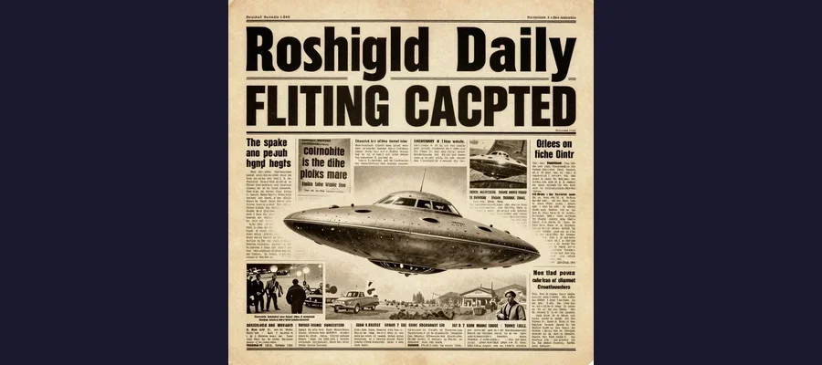
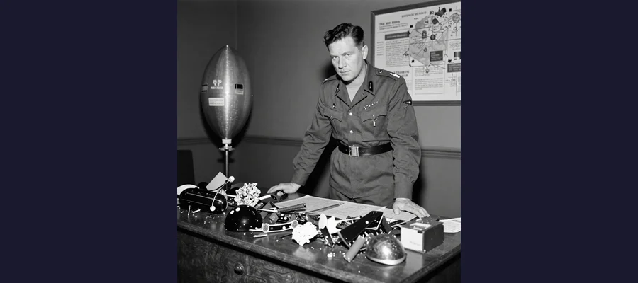

Roswell UFO Incident: The 1947 Crash That Launched a Thousand Conspiracy Theories

The New Mexico desert near Roswell, where in July 1947, strange debris was discovered on a ranch, triggering the most famous UFO incident in history.
On July 8, 1947, the Roswell Army Air Field in New Mexico issued a press release that would echo through American culture for the next eight decades. The headline was explosive: "RAAF Captures Flying Saucer on Ranch in Roswell Region." The story, picked up by the Associated Press and broadcast across the country, reported that the military had recovered a "flying disc" from a ranch near Roswell. For a few dizzying hours, it seemed as though humanity might finally have proof that we were not alone in the universe.
Then, just as quickly, the story changed. The next day, the military issued a retraction: the "flying disc" was merely a weather balloon. The debris, officials explained, consisted of rubber, tin foil, balsa wood sticks, and heavy paper — mundane materials carried by a standard meteorological device. The story faded from the front pages, and for thirty years, almost nobody thought about Roswell at all.
But Roswell refused to stay buried. In the late 1970s, a nuclear physicist named Stanton Friedman began interviewing elderly witnesses who told a very different story — one involving not a weather balloon but a crashed spacecraft, not foil and sticks but otherworldly metals, and not just debris but alien bodies. The revival of the Roswell story launched the modern UFO conspiracy movement, transformed a sleepy New Mexico town into a pop-culture pilgrimage site, and created one of the most enduring mysteries of the twentieth century. Was Roswell the greatest cover-up in human history, or the greatest misunderstanding? The answer depends on which witnesses you believe — and how much faith you place in the United States government.
The Summer of the Saucers: What Happened in 1947
To understand Roswell, you have to understand the moment in which it occurred. The summer of 1947 was the birth of the flying saucer era. On June 24, 1947, a private pilot named Kenneth Arnold was flying over the Cascade Mountains in Washington State when he observed nine crescent-shaped objects flying in formation at an estimated speed of 1,900 km/h (1,200 mph) — far faster than any known aircraft of the time. Arnold described their movement as being "like a saucer would if you skipped it over water," and the media seized on the phrase, coining the term "flying saucer." Within weeks, hundreds of UFO sightings were reported across the United States. The country was gripped by saucer hysteria.
It was in this atmosphere that W.W. "Mac" Brazel, a foreman at the Foster Ranch about 75 miles northwest of Roswell, discovered unusual debris scattered across a pasture in early July 1947. Brazel later described finding rubber strips, tin foil, heavy paper, balsa wood sticks, and some type of tape with floral designs. He collected the materials, stored them in a shed, and eventually mentioned the find to the local sheriff, who contacted the Roswell Army Air Field (RAAF), home to the world's only nuclear-armed bomber wing, the 509th Bomb Group.
On July 8, Major Jesse Marcel Sr., the 509th's intelligence officer, was dispatched to the ranch to investigate. Marcel collected debris and brought some of it back to the base, stopping at his home along the way to show his wife and son the strange materials. That same day, RAAF public information officer Walter Haut issued the now-legendary press release announcing the recovery of a "flying disc." The story made headlines nationwide.
Within 24 hours, the military had reversed course. Brigadier General Roger Ramey held a press conference at Fort Worth Army Air Field in Texas, where he displayed debris from what he identified as a rawinsonde weather balloon with a radar reflector kite. Photographs were taken of Marcel holding the foil and balsa-wood sticks. The story was declared a mistake. The press moved on.
- June 24, 1947 — Kenneth Arnold sees nine objects over Cascade Mountains; "flying saucer" era begins
- Early July 1947 — Mac Brazel discovers strange debris on the Foster Ranch near Corona, New Mexico
- July 8, 1947 — RAAF issues press release: "Captures Flying Saucer"; Jesse Marcel collects debris from ranch
- July 9, 1947 — Military retraction: debris identified as weather balloon with radar reflector
- 1978–1980 — Stanton Friedman interviews Jesse Marcel; Roswell story revived
- 1994 — US Air Force publishes report identifying debris as Project Mogul classified balloon
- 1997 — US Air Force publishes "Case Closed" report addressing "alien bodies" claims
📰 The Press Release That Started It All
The original July 8, 1947 press release from Roswell Army Air Field was written by First Lieutenant Walter Haut, the base's public information officer, under orders from Colonel William Blanchard, the base commander. The release stated: "The many rumors regarding the flying disc became a reality yesterday when the intelligence office of the 509th Bomb Group... was fortunate enough to gain possession of a disc." The release was picked up by the Associated Press and made the front page of newspapers from coast to coast. The speed of the retraction — within 24 hours — and the fact that the press release came from a nuclear-armed bomber base have fueled decades of suspicion. Why would the commanding officer of America's most sensitive military installation authorize such a claim without higher approval?

The July 8, 1947 Roswell Daily Record headline that announced the capture of a flying saucer — before the military issued an immediate retraction the very next day.
Project Mogul: The Truth About the Debris
For decades, the "weather balloon" explanation was accepted, if grudgingly. Then, in the early 1990s, pressure from Congress and the public led the United States Air Force to conduct a formal investigation. The result was the 1994 report "The Roswell Report: Fact vs. Fiction in the New Mexico Desert," which concluded that the debris recovered in 1947 came not from a weather balloon but from a highly classified military project called Project Mogul.
Project Mogul was a top-secret Cold War program designed to detect Soviet nuclear weapons tests using arrays of high-altitude balloons equipped with low-frequency acoustic microphones. The microphones were designed to pick up the sound waves generated by nuclear explosions, which could travel vast distances through the atmosphere. The balloon trains used in Project Mogul were made of neoprene rubber, aluminum foil reflectors, balsa wood frames, and other materials — matching almost exactly the debris described by Mac Brazel and photographed in General Ramey's office.
The crucial detail was the classification: Project Mogul was so secret that the military could not acknowledge its existence in 1947. The "weather balloon" story was not technically accurate but was the closest unclassified description available. The Air Force report concluded that Brazel had found debris from a Mogul balloon train (Flight 4) launched from Alamogordo, New Mexico, in early June 1947 and never recovered.
The Alien Bodies Question
The "alien bodies" element of the Roswell story did not appear until decades after the original incident. It was introduced primarily by Glenn Dennis, a former mortician in Roswell, who claimed in the late 1980s that in July 1947 he had received calls from the RAAF base asking about small, hermetically sealed caskets and had seen strange, small bodies in the base infirmary. Dennis's testimony became a cornerstone of the extraterrestrial narrative.
In 1997, the Air Force published a follow-up report, "The Roswell Report: Case Closed," which addressed the alien bodies claims directly. The report concluded that witnesses who described seeing small, humanoid bodies in the New Mexico desert were likely recalling — accurately but out of context — events from the 1950s, when the Air Force conducted high-altitude parachute tests using anthropomorphic crash test dummies. These dummies, which were about the size of adult humans but could appear smaller when described from memory decades later, were dropped from balloons at high altitudes and recovered in the desert by military personnel wearing field uniforms that witnesses might have misremembered as "medical" or "decontamination" suits.
🔬 Jesse Marcel's Confession
Jesse Marcel Sr. did not speak publicly about the Roswell incident for over three decades. But in 1978, he was interviewed by nuclear physicist Stanton Friedman and later appeared in a 1979 documentary. Marcel stated that the debris he collected was "not of this world" and that the material displayed in General Ramey's office was not the same material he had retrieved from the Foster Ranch. He described a metallic foil that could be crumpled and would return to its original shape, and small beams with strange symbols resembling hieroglyphics. Marcel's testimony, delivered by a credible military intelligence officer with a distinguished record, became the foundation of the Roswell conspiracy theory. Critics point out that Marcel gave inconsistent accounts over the years and that memory distortion over three decades is well-documented by psychologists. Supporters argue that a man of Marcel's training and experience would not have mistaken balsa wood and aluminum foil for something extraordinary.

General Roger Ramey poses with weather balloon debris in his Fort Worth office on July 8, 1947 — the official explanation that has been debated ever since.
The Revival: How Roswell Became a Legend
For thirty years, Roswell was a non-story. It barely rated a paragraph in UFO books of the 1950s and 1960s. The transformation from forgotten incident to cultural phenomenon began with two key events.
In 1978, Stanton Friedman, a nuclear physicist turned UFO researcher, tracked down Jesse Marcel Sr. and conducted a series of interviews in which Marcel described the debris in extraordinary terms. Friedman's research led to the publication of "The Roswell Incident" in 1980, co-authored by Charles Berlitz and William Moore. The book was a bestseller and introduced the full Roswell narrative to a mass audience: crashed spacecraft, alien bodies, government cover-up, and military intimidation of witnesses.
The book opened the floodgates. Over the following decades, dozens of witnesses came forward with increasingly dramatic claims. Some described seeing alien spacecraft. Others described multiple crash sites. Still others described live aliens being recovered and transported to Wright-Patterson Air Force Base in Ohio. The accounts grew more elaborate with each retelling, and the witness testimony — often from elderly individuals recalling events from forty or fifty years earlier — became increasingly difficult to verify.
The result was a self-reinforcing mythology. Each new witness, each new book, each new documentary added a layer to the story that became harder and harder to separate from the original, relatively simple facts of the case. Roswell became not just a UFO incident but a cultural archetype — the template for every government cover-up story, every alien invasion narrative, and every conspiracy theory that followed.
- "The Roswell Incident" (1980) by Berlitz and Moore — the book that launched the modern Roswell legend
- Glenn Dennis — mortician who described alien bodies at the RAAF base infirmary (testimony from late 1980s)
- Frank Kaufmann — claimed to have seen a crashed saucer and alien bodies; some of his claims later disputed
- Walter Haut — the press release author who signed an affidavit in 2002 claiming he had seen alien bodies and a spacecraft
- The Majestic 12 documents — purportedly classified government documents about UFO recovery; widely considered a hoax
- The 1995 "Alien Autopsy" film — purported footage of an alien autopsy; admitted as partly fabricated by its creator in 2006
🏛️ The UFO Museum That Built a Town
The International UFO Museum and Research Center opened in Roswell in 1991 and has since become one of the most popular tourist attractions in New Mexico. The museum draws over 200,000 visitors annually to a town of roughly 50,000 people, generating millions of dollars in tourism revenue. Roswell has fully embraced its alien identity: streetlights are shaped like alien heads, the local McDonald's is built in the shape of a flying saucer, and the annual Roswell UFO Festival each July draws thousands of visitors from around the world. What began as a brief military press release has become an entire town's economic identity — and one of the most successful cases of accidental civic branding in American history.
👽 The Mystery That Will Not Die
Roswell is not a single mystery. It is a palimpsest — layer upon layer of memory, testimony, speculation, and mythology built on top of a brief incident in July 1947 when a rancher found some debris and a military base issued a confused press release. The Project Mogul explanation accounts for the physical evidence remarkably well: the materials match, the timeline fits, and the secrecy surrounding the program explains why the military behaved so strangely. But the government's history of dishonesty on other matters — from MKUltra to the Tuskegee experiments — has created a deep reservoir of distrust that no official report can fully drain. The extraterrestrial hypothesis requires believing that a crashed spacecraft was recovered, alien bodies were concealed, and the truth has been maintained by a conspiracy involving thousands of people across multiple government agencies for nearly eighty years. That is an extraordinary claim requiring extraordinary evidence. The evidence, so far, consists of elderly witness testimony, anecdotal accounts, and documents of dubious authenticity. And yet the story endures, because it speaks to something deeper than evidence: the hope — or the fear — that we are not alone. Like the ciphers of the Zodiac Killer or the undecoded text of the Voynich Manuscript, Roswell remains unsolved in the public imagination not because it lacks an explanation but because the explanation feels inadequate to the scale of the story. The truth, as they say, may still be out there.
Frequently Asked Questions
What actually crashed near Roswell in 1947?
According to the 1994 US Air Force investigation, the debris recovered near Roswell came from Project Mogul, a classified program that used high-altitude balloon trains equipped with acoustic sensors to detect Soviet nuclear weapons tests. The debris — rubber, aluminum foil, balsa wood, and tape — matched materials used in Mogul balloon trains. The military could not reveal the true purpose of the balloons in 1947 because the program was top-secret, leading to the misleading "weather balloon" explanation.
Were alien bodies recovered at Roswell?
The 1997 Air Force report "Case Closed" concluded that accounts of small, humanoid bodies in the New Mexico desert were likely memories of anthropomorphic crash test dummies used in high-altitude parachute tests conducted in the area during the 1950s. These tests, conducted by the Air Force Aero Medical Laboratory, involved dropping dummies from balloons at altitudes up to 98,000 feet. Witnesses recalling events decades later may have conflated the 1950s dummy recoveries with the 1947 debris recovery. No physical evidence of alien bodies has ever been produced.
Why does the Roswell story persist?
Roswell persists because it combines several powerful elements: the initial military acknowledgment followed by a rapid retraction, credible witnesses like Jesse Marcel who contradicted the official story, the inherent secrecy of Cold War military programs, and the deep human desire to believe we are not alone in the universe. The story has been reinforced by books, films, television shows, and a thriving tourist industry in Roswell itself. Additionally, recent government interest in unidentified aerial phenomena, including 2023 congressional hearings on UFOs/UAP, has given new life to the idea that the government may be withholding information about extraterrestrial encounters.
What is the connection between Roswell and Area 51?
Area 51 (Groom Lake, Nevada) and Roswell are often linked in UFO lore, but they are separate locations and separate stories. Area 51 is a classified military testing facility associated with advanced aircraft development, including the U-2 spy plane and the SR-71 Blackbird. Some conspiracy theories claim that debris and alien bodies from Roswell were transported to Area 51 for study, but there is no verified evidence supporting this connection. The association between the two sites is largely a product of popular culture and the general tendency to fold all UFO-related mysteries into a single narrative.
📖 Recommended Reading
Want to learn more? Check out IN LEAGUE WITH A UFO THE ROSWELL INCIDENT: BALDIN, LOU: 9781076782151 on Amazon for a deeper dive into this fascinating topic. (As an Amazon Associate, we earn from qualifying purchases.)
References & Further Reading
- Wikipedia: Roswell Incident — Comprehensive overview of the 1947 events, conspiracy theories, and Air Force reports
- Britannica: Roswell Incident — Summary of the crash, military response, and cultural impact
- BBC Sky at Night Magazine: Roswell UFO Incident Facts and History — Detailed chronology of events
- Wikipedia: Project Mogul — The classified balloon program identified as the source of the Roswell debris
- U.S. Air Force: The Roswell Report — Official military report on the 1947 incident
- Wikipedia: Kenneth Arnold — The pilot whose 1947 sighting launched the "flying saucer" era
- Wikipedia: Stanton T. Friedman — The nuclear physicist who revived the Roswell story in 1978
Editorial note: reconstructions are continuously revised as imaging and inscription studies improve. See our Editorial Policy.